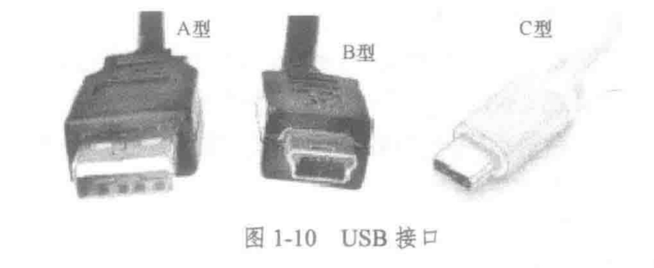

笔记
约 6833 个字 24 张图片 预计阅读时间 23 分钟
Warning
文末有pdf版
第一章 计算系统概述
1.0 计算机特点
- 运算速度快
- 计算精确度高
- 逻辑运算能力强
- 存储容量大、
- 自动化程度高
- 性价比高
信息系统的功能是能够为需要者提供特定的信息，支持用户快速、有效地输入信息、存储、处理和获取信息。
1.1计算机
1.1.0 计算机系统的组成
- 计算系统=计算机+数据
- 计算机系统=硬件+软件
计算机系统 - >硬件系统 ->处理器系统（主机） ->存储器系统 ->I/O设备->输入设备 ->输出设备 - >软件系统 ->系统软件->操作系统 - >编程语言 - >工具软件 ->应用软件->办公软件 ->其他应用软件
1.1.1硬件
1.1.2软件
- 计算机硬件之外的所有东西，包括文档、程序、语言等，都可以被归为软件。
- 系统软件
- 应用软件
1.1.3 计算机分类
- 超级计算机：神威太湖之光
- 大型计算机
- 小型计算机
-
微机→PC
32位微机：能同时处理32位二进制数微机中控制器的基本功能: 控制系统各部件正确地执行程序
-
嵌入式计算机
- 移动设备
1.2计算机简史
1.2.1计算机简史-硬件史
计算机之父：巴贝奇 世界上第一台计算机：1946
| 年份 | 设备 | 技术 |
|---|---|---|
| 1642 | 帕斯卡加法器 | ... |
| 1945-1954 | ENIAC(第一台通用计算机) | 电子管 |
| 1955-1960 | 第二代计算机 | 晶体管 |
| 20世纪60年代 | 第三代计算机 | 集成电路 |
| 1975-至今 | 第四代计算机 | 大规模集成电路 |
| - 摩尔定律：当价格不变时，集成电路上可容纳的晶体管数目，约每隔18个月便会增加一倍，性能也将提升一倍。 | ||
| - 1946～1954 电子管（第一代） | ||
| - 1955～1960 （第二代） 晶体管 | ||
| - 1963～1975 （第三代） 集成电路 | ||
| - 1975～至今（第四代）大规模集成电路（LSIC） | ||
| >首次实现“存储程序”的计算机：冯·诺依曼设计的ENVAC | ||
| #### 1.2.2软件的进化 | ||
| - 第一代计算机：机器语言->汇编语言； 程序员必须记住所有二进制数字组合 | ||
| >程序设计语言，按照和计算机硬件的接近程度，可以分为机器语言、汇编语言、高级语言 | ||
| - 第二代计算机：开始使用高级程序设计语言；脱离硬件束缚，软件不再捆绑硬件销售 | 高级编程语言的开发：FORTRAN（科学计算）和COBOL （商业应用） | |
| - 第三代计算机：出现了操作系统，使用人群专业->用户 | 统计软件包SPSS | |
| - 第四代计算机：1. 开发了更好用的操作系统（图形交互界面） | ||
| 2. 出现了结构化程序设计语言，如：Pascal，C语言 | ||
| 3. 九十年代后，以图形界面为特征的WINDOWS操作系统取代字符界面的DOS操作系统 | ||
| 4. 面向对象的程序设计方法的出现 | ||
| ### 1.3计算机模型 | ||
| 建立计算机模型，一种是黑盒模型，它不考虑计算机的内部结构，在这种模型中输入相同的数据后能得到相同的输出数据。改进的模型加入了一个程序部分，它的输出结果取决于控制处理的程序。 | ||
| ##### 1.3.1数据处理机模型 | ||
| - 黑盒模型：计算机在数据处理过程中，输入的数据相同，那么输出结果将能够重现（一致）；输入的数据不同，输出结果也能够随之改变 | ||
| - 具有程序能力的数据处理机 | ||
 |
||
| ##### 1.3.2现代计算机模型（冯·诺依曼） | ||
| >奠定了现代计算机的结构理论基础 | ||
 |
||
| - CPU=运算器+控制器 | ||
| - 五个子系统 | ||
| 1. 输入（算术/逻辑运算） | ||
| 2. 运算器 | ||
| 3. 存储器 | ||
| 4. 控制器 | ||
| 5. 输出 | ||
| - 程序存储原理 | ||
| 1. 要求程序和数据采用同样的格式——二进制【现代计算机之所以能自动地连续进行数据处理，主要是因为具有程序存储功能】 | ||
| 2. 程序和程序执行所需要的数据在执行之前存放到内存储器中（数据和程序放在同一个存储器中） | ||
| 3. 如何使计算机自动执行程序 | ||
| ——执行程序时,给出程序所在的存储位置 | ||
| 4. 程序存储的另一个重要理由：程序的“重用” | ||
| - 程序和数据分开存放——哈佛结构(用于某些专用处理器系统和通用CPU芯片的内部) | ||
| ### 1.4计算机组成 | ||
| - 计算机的5个组成部分由CPU、主存储器、输入/输出三个子系统构成。 | ||
| - 连接三个子系统的是总线（地址、数据、控制）。总线的作用是计算机数据和控制信息的传输通道。分为地址、数据、控制 | ||
| >计算机字长取决于数据总线的宽度 | ||
| - 今天的计算机将CPU、存储器等电路部件放置在一个主板上，称为主机，通过电缆与I/O设备（统称外部设备，简称外设）相连。 | ||
 |
||
| #### 1.4.1 第一个部分：处理器系统(CPU) | ||
| ###### 1.4.1.0 组成 | ||
| - ALU: 算术逻辑单元 | ||
| - CPU主要为单个芯片，也有多个芯片组成的CPU阵列。 | ||
| - 从逻辑上，可分为5个部分，包括运算器、控制电路、地址电路和数据寄存器与指令代码寄存器(寄存器组) | ||
| →内部功能： | ||
| - 运算器，执行算术运算和逻辑运算 | ||
| - 数据寄存器，存放运算器执行运算所需的数据 | ||
| - 指令代码寄存器，存放处理器执行操作需要的指令代码。 | ||
| - 控制电路，产生并输出控制信号 | ||
| - 地址电路，产生并输出地址信号 | ||
| - 程序计数器：存放下一条指令所在单元地址 | ||
| - 存储器系统的任务：存储数据和程序和参与运行程序 | ||
| - 多核的意义：把多个CPU核心和相关辅助电路封装在一个芯片 | ||
| ###### 1.4.1.1 两种类型的处理器系统的设计 | ||
| - CISC（complex）-Intel公司 ->（指令数量多,设计简单【因为指令系统比较完备】） | ||
| - RISC(reduce)-Apple公司和神威（SW）处理器 ->（指令数量少优点：芯片结构简单、功耗小） | ||
| - 两种完全相反的设计方法。主要区别是处理器所拥有的指令的数量和复杂程度不同，而都是为了提高计算机性能 | ||
| >不同制造商生产的不同系列的CPU,其指令系统具有如下特征:相互不一定兼容 | ||
| ###### 1.4.1.2 结构模型 | ||
 |
||
| ###### 1.4.1.3 性能指标 | ||
| - 主频：衡量CPU运行速度的参数。CPU主频越高，运算和处理数据的速度就越快。（√） | ||
| - CPU数量、内核数量 | ||
| - 字长：处理器一次能够处理的最大二进制数的位数。(不是一共，可以多次处理) | ||
| - 协处理器：不单独工作、在CPU的协调下完成任务，如：处理浮点运算的协处理器。 | ||
| - 内部高速缓存器(Cache)【位于CPU内的， Cache位于CPU和内存之间】 | ||
| ->衡量微机CPU性能的主要技术指标有：频率、字长、浮点运算能力 | ||
| ->目前主要的CPU厂商有Intel、AMD等公司。 |
1.4.2 部分2：存储器
- 材质：传统为磁盘 30年前：半导体的，没有易失性的闪存->SSD U盘也是外存的一种
1.4.2.1功能和概况：
- 存储器系统的任务是存储数据和程序和参与运行程序
- 每个存储单位都有一个唯一标识->存储地址，用二进制位进行标识，存储单位的总数称为存储容量。-> 每个内存单元存储1个字节的地址，地址也按二进制位进行标识，连续存放。->内存空间和CPU地址总线数目有关。**
- 注意：地址总线->寻址空间：\(2^{32}\)/\(2^{10}\)/\(2^{10}\)/\(2^{10}\)=\(2^{2}\) 这里的G只是一个单位，没有以字节为单位，不要想当然除以8。 【关于存储单位】 区别【字长】和【字】和【字节】的概念：
- 字长：CPU一次操作的最大数据长度，单位是二进制位；计算机的字长又叫“字”，是指处理器一次能够处理的最大二进制数的位数。
- 字节：八位二进制位
- 计算机存储最小单位：位（bit）
 说明：
1. 计算机的字长又叫“字”，是指处理器一次能够处理的最大二进制数的位数。
2. 计算机存储器地址按二进制位模式进行标识，如10位二进制位地址能标识存储单元2^10个，即1024个。
3. 计算机存储模式规定，存储单元以位（bit）为单位，8个二进制位构成1个字节（Byte）。
4. 现代计算机之所以能自动地连续进行数据处理，主要是因为，它要求程序和数据采用相同的格式，程序在执行之前被存放到RAM中
说明：
1. 计算机的字长又叫“字”，是指处理器一次能够处理的最大二进制数的位数。
2. 计算机存储器地址按二进制位模式进行标识，如10位二进制位地址能标识存储单元2^10个，即1024个。
3. 计算机存储模式规定，存储单元以位（bit）为单位，8个二进制位构成1个字节（Byte）。
4. 现代计算机之所以能自动地连续进行数据处理，主要是因为，它要求程序和数据采用相同的格式，程序在执行之前被存放到RAM中
1.4.2.2组成
1.4.2.2.1连接方式
- 内存←缓存→外存
- 内存→（直接相连）高速缓存→CPU【CPU直接读取的是RAM，与CPU直接互联，由CPU根据存储单元地址进行存取操作。】
- 内存可以被扩展

1.4.2.2.2存储器的主辅结构
- 使用高速的半导体存储器作为主存储器（内存）
- 使用较低速的磁盘、光盘作为辅助存储器。（外存）

1.4.1.4.5 基本工作原理：
->程序和数据存储在外存中，被执行的程序和数据从外存中调入主存运行，运行结束程序和数据被重新存入外存 ->原因是：内存快而小，外存慢而大 ->这种主存—辅存结构具有很好的互补性，同时也是经济的 ---->主存容量小，有易失性,但速度快，承担运行程序的任务 ---->外存速度慢，但容量大，持久保存，主要用于保存程序和数据； ATTENTION:如果要作为外存的器件，都具有持久保存数据的能力。 x 【闪存】
1.4.2.3内存(又称主存)
- 材料：半导体（由半导体存储器组成，是电子器件，运行速度快）
- 内存主要以字节形式存储。

- 根据存储信息方式的不同，可将内存分为RAM和ROM
- 随机存取存储器(RAM)**(速度快、易失性)
- 可以分为动态RAM（DRAM）和静态RAM（SRAM）
- DRAM存取速度较慢，动态RAM制作内存条，静态RAM用作高速缓冲器（Cache)
- 只读存储器（ROM）
-
典型应用：计算机的开机程序BIOS和机器参数就被保存在ROM中。计算机开机后首先执行的是ROM程序，该程序位于BIOS中。然后将位于外存的控制程序调入内存，并交付控制权。存放启动计算机所需要的BIOS （计算机每次开机都执行相同的操作，所以 BIOS程序是固定不变的，它被“固化” 在ROM 中。）
tips: 为了防止别人非法使用计算机，可以通过CMOS为计算机设置口令RI
-
分类： ->PROM:一次性写入的存储芯片，数据一旦写入 不能被改写 ->EPROM:如果数据需要被改写，就需要用一种紫外线光设备将原数据擦除后再重新写数据 ->EEPROM:加电即可删除原来数据，以Byte为擦除单位，工艺相对复杂，价格很高，容量小。
-
外存储器
- 外部存储器和内部存储器相比,它的主要特点是: 速度慢、容量大、价格低、非易失性
- 4.3.1 磁介质硬盘->存储介质为磁介质。
- 磁盘的工作原理：在磁盘读写电路的控制下，读写磁头沿着盘片直线移动，盘片围绕中心轴高速旋转，按扇区进行数据的寻找和读取
- 磁盘被划分为磁道，磁道被划分扇型区域，程序代码和数据以扇区为最小存储单位
- 4.3.2 固态存储器（SSD）：
- 固态存储器(SSD)，存储介质是闪存，闪存从原理上讲是可改写的半导体存储器
- 类型：U盘，固态硬盘(Solid State Drives,SSD)
CD-ROM: 具有多媒体功能的微型计算机系统中使用的CD-ROM是一种只读型光盘
例题：

1.4.2.4 缓存：
缓存是在存储器之间进行速度匹配的技术，也用在主机和(外设)的连接上。【CPU与存储器，内存与磁盘】

1.4.1.6 各种存储器的主要性能参数
 *寄存器存储很快，但容量很小
*寄存器存储很快，但容量很小
1.4.3 输入输出(端口)
- 输入设备：键盘（IBM键盘【标准键盘】和微软键盘）、鼠标
光笔: 通常配合数字板或触控屏幕使用。它可以将手写或绘画转换为数字格式，以便在计算机上编辑、保存和共享。[输入设备]
- 输出设备：显示器（CRT显示器和液晶显示器）、打印机(喷墨、激光和针式打印机)
- 端口：是外部设备与主机连接器，又称接口(Interface)，带接口电路，负责在慢速的外设和高速的主机之间建立一个缓冲
- 端口（接口）是一种技术，也是一种标准：符合这个标准的设备都可以直接插入端口实现与计算机的连接，这就是即插即用（Plug and Play，PnP）。
- （源自判断题）外设的工作速度要比CPU及存储器慢许多，为此要设计能使其与CPU及存储器能协同工作的部件，这个协同设计就是接口。
- 最常见：USB接口(Universal Serial Bus)（来自判断题）（USB叫做通用串行接口总线，它是计算机连接外设的端口，也是在高速主机和慢速外设之间的缓冲，因此它也是一种接口。) ->USB具有热插拔和即插即用的功能
- 端口和主机的数据传输模式有两种：并行或串行。★ 并行一次传输8位数据（字节模式） 串行每次传输1位数据（也是字节模式，一次1B）。
- USB的三种接口： - Type A: “公共口” Type B：小功耗数码产品 Type: 对称性 无方向性 
1.4.4 运算器
- 主要功能：算术和逻辑运算 ...
1.5计算机分类
-
微型计算机：台式机、笔记本
-
工作站（功能更为强大）
- 小型计算机
- 大型计算机
- 巨型计算机
1.6计算机应用领域
- 科学计算
- 数据处理：<-办公自动化
- 实时控制
- 辅助设计
1.7操作系统
1.7.1定义：
操作系统调度计算机资源，为用户使用计算机提供服务 - 操作系统是计算机硬件和用户 (其他软件和人)之间的接口，位于计算机系统核心的操作系统，它使得用户能够方便地操作计算机，能有效地对计算机软件和硬件资源进行管理和使用。 - 通常，任何应用软件都需要依赖其运行环境，这个环境也叫做平台，它是指操作系统 - 操作系统又称为内核 - 通常的操作系统发行时也提供一个shell（外壳），用于用户操纵计算机，其中外壳是用户和内核【操作系统】的接口 误区： - 未必所有软件都要通过操作系统（一些数据库无需） - 操作系统是计算机软件和用户之间的接口，它使用户能够方便地使用软件完成相应工作。->F，前面一个划线处应该是硬件，后面漏提硬件
1.7.2层次结构：
- 内核
- 用户接口
- ★操作系统分为：进程管理器、存储器管理器、设备管理器和文件管理器（见下1.7.4资源调度）
1.7.3常见操作结构：
1.7.3.0 多任务相关
- 目前，运行在微机和移动设备上的操作系统Windows、Mac OS、Android都是单!用户多任务系统.
- 操作系统的多任务就是操作系统可以同时运行多个程序
- 实时操作系统：计算机执行任务在规定的时间内响应并快速处理
- 计算机系统并行处理应具有最基本的功能是协调多个处理器同时执行不同的进程
1.7.3.1 MS-DOS
- 单用户操作系统
1.7.3.2 Windows
- 在Windows中，用户使用控制面板管理硬件资源设置。
1.7.3.3. Mac OS
- 强图形处理系统
1.7.3.4. Unix/Linux
- 著名的多用户多任务分时操作系统。
- Linux是一套免费使用和自由传播的类Unix操作系统。
1.7.3.5 移动设备操作系统
- Android（安卓） Google公司收购了原开发商Android后，联合多家制造商推出的面向平板电脑、移动设备、智能手机的操作系统。基于Linux开放的源代码开发且仍然是免费系统。
- iOS Apple公司为其生产的移动电话iPhone 开发的操作系统。主要应用于Apple的i系列数码产品，如iPhone、iPAD等
1.7.4 资源调度
- 操作系统庞大，但归结起来就是对各种应用程序使用CPU、存储器和外设进行调度，分为：
- CPU调度（进程管理）
- 内存调度（管理）
- 设备管理：并不直接操控设备，而是通过设备驱动程序间接操控设备
- 文件管理

1.7.4.1 CPU调度：->负责调度进程
- 比较常用的调度方法是时间片轮转法
- 按照FCFS(First-Come, First-Served,先来先服务调度)原则，排成一个队列。
- 每次调度，把CPU分配给队首进程，并令其执行一个时间片。 当执行的时间片用完时，由一个记时器发出一个时钟中断请求，该进程被停止，第2个时间片分配给第2个进程；依次循环。当进程获取时间片后有三种状态：
时间片内未完成任务
需要I/O操作
任务完成，进程中止并退出内存

a：运行
2：时间片到
c：等待I/O
3：表示等待某个事件
1：表示进程被选中

1.7.4.2 死锁
- 死锁指多个进程因竞争共享资源而造成的一种僵局，若无外力作用，这些进程都将永远不能再向前推进。
- 发生死锁会导致系统处于无效等待状态，因此必须撤销其中的一个进程。例如在Windows中，可用“任务管理器” 终止没有响应也就是无效的进程。
1.7.4.3 内存管理：
1.7.4.3.1 单道程序与多道程序：
- 单道程序：内存中除一小部分装载操作系统，大部分被单一的程序所使用。
- 多道程序：可以装入多个程序并“同时”执行这些程序，由CPU轮流。按照内存和外存是否交换程序和数据进行划分，有两种实现多道程序的技术：
- 非交换技术：程序运行期间全部在内存进行，不和外存交换数据。
- 分为分区调度和分页调度：
- 分区调度：内存被分成不定长的几个区， 每个程序占有一个区（存储空间是连续的），CPU按照进程调度在各个分区（程序）之间轮流执行。 - 造成的内存碎片比较多
- 分页调度：内存和程序都被进行了划分，内存被分为大小相等的“帧”，而程序被分成和帧大小相等的“页”，系统根据程序的页的数量装入到同样数量的帧中。并且程序在内存中可以不连续存放。和分区调度相比，内存使用率增加，系统开销降低。 - 缺陷：大程序无法运行
- 交换技术：程序在运行期间需要和外存交换数据。
- 非交换技术：程序运行期间全部在内存进行，不和外存交换数据。
1.7.4.3.2 虚拟内存：
- 概念：在磁盘上开辟一个比内存要大的空间(Win建议1.5倍）,把被执行的程序装载到这个区域中，并按照内存的结构进行组织。
- 虚拟内存（Virtual Memory）是在外存设置一个存储空间，通过虚拟存储技术来实现的。
- 当需要调入内存时，直接从虚拟内存中进行映射操作。
1.7.4.4 设备管理：
- 设备无关性：操作系统从众多的I/O设备中抽象出若干通用类型，每个类型都可以通过一组标准函数（软件接口程序）来访问
- 设备的差异被设备驱动程序所封装。设备驱动程序一方面适合各类设备；一方面也提供了一组标准接口。
- 抽象出的通用的I/O设备分类：
- 块设备（如磁盘）：信息存储在固定长度块（扇区）中；每个块有自己的地址；信息传递以块为单位
- 字符设备（如键盘、鼠标器）：以字符为单位接收/发送
- 操作系统不直接操纵设备，它是通过管理设备的驱动程序间接使用设备
- 操作系统对于硬盘的管理是归于外设的，对磁盘中存储的程序和数据归类到文件管理中
1.7.4.5 文件管理：
1.7.4.5.1 文件＆文件系统
- 文件是一个存储在存储器上的数据的有序集合，并标记为文件名。
- 文件系统是所有文件的集合以及操作系统对文件的管理。
1.7.4.5.1 文件名
- Windows系统环境下的文件名是由字符和数字组成的，分三部分，格式为：<盘符> <文件名> .扩展名，例：C:(路径)TEXT.TXT
- 文件名：1～N个字符组成
- 扩展名为由“.”开始的若干个（一般为1～3 ）字符组成。扩展名的一个重要作用是计算机的程序是根据它们判断其用途的，并对数据文件建立与程序的关联。有些软件在创建文件的同时给出文件扩展名
- 在Windows中，能够被执行的程序文件的扩展名: .bat、exe和.com
- 操作系统的注册表中有一个能被识别的文件类型清单
1.7.4.5.2 文件系统
- FAT系统：
- 操作系统通过建立文件分配表FAT，记录磁盘上的每一个簇是否存放数据。
- 特点：
- 小存储系统，系统开销小，系统损坏有可能被恢复
- 大容量系统，分区数目增加，性能迅速下降
- NTFS系统：
- Windows高版本推荐使用NTFS
- NTFS也是以簇为单位来存储数据文件，实际支持的磁盘分区最大达2TB。
- 系统文件可存在NTFS 盘或分区的任何物理位置，不必象FAT那样保存在引导区中，着就意味着任何磁道损坏都不会导致整个磁盘不可用。
 - 在微软的操作系统中，文件的逻辑结构就是目录结构。文件系统必须为文件在物理设备上的存放确定一个规则，即文件的物理存储结构。
- 在微软的操作系统中，文件的逻辑结构就是目录结构。文件系统必须为文件在物理设备上的存放确定一个规则，即文件的物理存储结构。
1.8 常用软件：
1.8.1压缩工具：
1.8.1.1 概况：
- (1) WinRar (2) 7-Zip
- WinRar和7-Zip是Windows系统中常用的压缩工具软件，这两款软件的数据压缩比(datacompression ratio ) 即原始数据长度/压缩后数据长度之比均高于Windows自带的zip功能，且都具备分卷压缩、加密压缩、生成自解压exe等功能。
- winRAR和7zip都是无损压缩
- 7-zip相比Win-rar在压缩含有相同内容的多个文件时具有更大的压缩比
作业题的收录
第一次作业：
- 数据就是指计算机中运行的数，它们可以被用来进行求值和输入输出。->F（数据不只是数字）
- SSD的存储介质是磁性材料->F
- 目前主要的CPU厂商有Intel、AMD等公司。 ->T
- 现在的计算机都是使用集成电路的，包括外存也全部是半导体集成电路。->F (计算机确实使用超大规模集成电路，但是外存储器有多种，如固态硬盘是集成电路组成，而机械硬盘是使用磁盘存储，光盘使用光介质存储信息。)
- 计算思维的本质是对求解问题的抽象和实现问题处理的自动化。
- 依据程序存储原理，程序和数据在存储器中以（ ______）的格式存储。->相同（二进制格式）
- 下列存储器中，存取速度最快的是内存（硬盘/光盘/U盘/内存）
第二章 数据表示与信息编码
一、十进制转换为二进制：
windows 7以后的系统中的“计算器”就有在二进制数、十进制数、十六进制数和八进制数之间的转换的功能 微型计算机中普遍使用的字符编码：ASCII ASCII:用7（不是8）位表示，最高位是符号位
十进制整数部分用2整除，余数按顺序组合即得对应的二进制：45=\({101101}_{2}\)
十进制小数部分乘以2，将进位按序组合：0.625=\({0.101}_{2}\)
计算过程：

二、有符号整数的表示：
- 原码：约定：二进制最高位0表示正数，1表示负数（缺点：运算时符号要单独考虑，电路设计复杂）计算机将带符号位的二进制数叫做机器数
- 反码：对原码各位取反： e.g. -85原码：11010101，对应反码：10101010（符号位不变）
- 补码：=反码+1 补码的含义：对于R进制，如果两个数的和是R，这两个数就互为补数 e.g.-85原码：11010101，对应补码：10101010+1=10101011
- 正整数的补码、反码和原码相同
- 0的原码和补码都是00000000！
- 负整数的补码=反码+1
- 现代计算机中：整数都是以补码来表示的。

三、实数的表示：
- 将小数点固定在数值部分最高位的左边的表示方法为定点纯小数格式，最右边叫做定点纯整数格式
定点纯小数表示：
- 定点数（fixed point）表示 固定小数点位置
- 定点纯小数格式：2. 定点纯小数格式：

- 定点纯整数格式：

- 由于位数限制，小数在计算机中不能精确表示，定点表示法表示的实数范围及精度都很小
浮点数表示:
- 科学计数法是指用指数表示数的范围
- 32位浮点数格式：
 Example：0 1(代表是负指数) 0010101 10101000000000000000000= +0.65625×\({2}^{-21}\)
Example：0 1(代表是负指数) 0010101 10101000000000000000000= +0.65625×\({2}^{-21}\)

二进制运算：补数减法
~~原理推导：~~ ~~设x1,x2,这里假设x1>0,x2<0 并且都一共是n位~~ ~~于是x1保持不变，x2先取反=\({2}^{n}\)-1-x2~~ ~~前面再加一位\({x2}^{'}\)=x2+\({2}^{n}\)=2\({2}^{n}\)-1-x2~~ ~~x1+\({x2}^{'}\)=2\({2}^{n}\)-1-x2+x1
减法规则：
连同符号位和被减数的补数相加，丢掉进位
如果和数符号位为0，运算结果就是差；
如果和数符号位为1，则要将和数再次取补数得到差。
例如，十进制58-66，用8位二进制计算：
 •和数最高位1，再次求补得到： 10001000，即-8
•补数的一个重要特性：补数的补数还原为原机器数
•和数最高位1，再次求补得到： 10001000，即-8
•补数的一个重要特性：补数的补数还原为原机器数
三、编码
一个汉字存储两个字节

其他编码方式：
一、霍夫曼编码（David Huffman）——无损压缩 - 出现的码较短，很少出现的码字较长 - 数据的总长度变小，存储空间小，传输快 - 频率相关编码 二、RLE编码 - 相同的连续编码标记为编码及数量 - Example： - 一段红色线的长度有200个点，点数据8位 - ->## R200 - ”##“ 为控制位，R为颜色，200为行程长度 - 应用广泛 - 无损压缩 ，如文本，程序，and - 有损压缩，如音频、视频、图像…
四、图像格式
图像的表示：
- 颜色数据，点（Dot，point，Pixel）
- R(Red)、G(Green)、B(Blue)
- 每种颜色用定长的二进制表示
- 高质量图像还有灰度（亮度）数据
- 动态与静态
- 静态图像是动态图像的基础
- 物理世界的影像
- ADC 为数字图像
- 主要技术参数
- 显示分辨率
- 图像(存储)分辨率
- 像素深度---像素位数
JPG:
- JPEG/JPG，Joint Photographic Experts Group
- 静态图像的首选格式
- 应用最好的图像压缩技术
- 属于点位图像，但存储的不是像素数据
- RGB -> YUV
- YUV –PAL制电视颜色编码方法
- Y (Luminance，流明 )
- U、V（Chroma）两个色度信号
- New？
- HEIF，High Efficiency Image Format
- 不兼容JPG